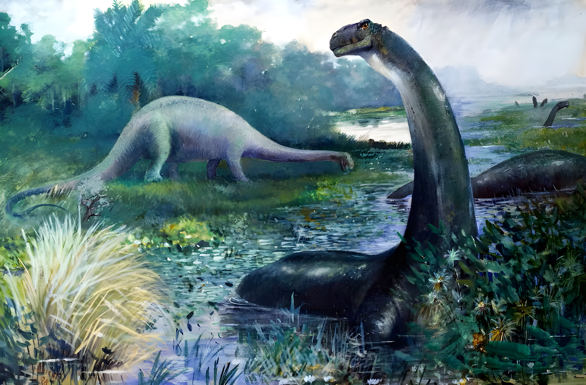

Brontosaurus
Thằn Lằn Sấm kỷ Jura
Tổng quan
Kỷ
Jurassic
Họ
Diplodocidae
Chi
Brontosaurus
Dài
21 m
Cao
5 m
Nặng
16.5 tấn
Thức ăn

Brontosaurus là một loài khủng long chân thằn lằn lớn. Nó tồn tại từ cuối kỷ Jura đến đầu kỷ Phấn trắng, từ 163,5 triệu đến 100,5 triệu năm trước. Nó là một trong những loài khủng long nổi tiếng nhất từ trước đến nay.
Nguồn: wikipedia.org
Phân bố
Khu vực phía Tây Bắc Mỹ
Thông tin thêm về Brontosaurus
Kỷ nguyên
Những con vật khổng lồ này sống trong kỷ cuối kỷ Jura đến đầu kỷ Phấn trắng, khoảng từ 163,5 triệu đến 100,5 triệu năm trước.
Phân bố
Brontosaurus sinh sống ở khu vực đồng bằng mở và khu vực đầm lầy phía Tây Bắc Mỹ, hóa thạch của nó đã được tìm thấy ở những tảng đá có niên đại từ Kỷ Jura tại mỏ đá Como Bluff 10, Wyoming.
Tên khoa học
Được đặt tên bởi nhà cổ sinh vật học Othniel Charles Marsh vào năm 1879. Tên Brontosaurus nghĩa là "thằn lằn sấm sét" trong tiếng Hy Lạp.
Kích thước
Brontosaurus là một trong những loài khủng long lớn nhất, dài 21 - 25 mét, nặng khoảng 16.5 tấn, cao khoảng 8.5 mét.
Ngoại hình
Brontosaurus mặc dù vẫn to lớn đồ sộ nhưng vẫn có cấu trúc mảnh khảnh hơn so với các loài Sauropoda khác, như các nhóm Titanosauroidea và Brachiosauridae. Thân hình giống voi, cổ dài và mảnh, đầu nhỏ, thân nặng, đuôi dài như roi. Răng rộng và cứng, giống thìa. Chân trước hơi ngắn hơn chân sau.
Chế độ ăn
Brontosaurus là một loài ăn thực vật. Chi khủng long này thường ăn cây cỏ ở thảm thực vật gần mặt đất.
Các nghiên cứu cho thấy rằng Brontosaurus sẽ sử dụng hàm răng độc đáo của chúng để ăn lá dương xỉ mềm và bụi rậm. Thay vì nhai thức ăn, chúng sẽ dành nhiều thời gian để tiêu hóa và lên men thức ăn trong dạ dày và ruột.
Khám phá
Hóa thạch của nó lần đầu tiên được phát hiện ở phía tây Bắc Mỹ vào năm 1874 và được mô tả lần đầu tiên vào năm 1879 bởi nhà cổ sinh vật học người Mỹ Othniel Charles Marsh. Tuy nhiên, vào năm 1903, chi này được gộp vào chi được mô tả trước đó Apatosaurus. Tuy nhiên, chúng được xác định là một chi riêng biệt sau đó vì chúng sở hữu nhiều đặc điểm khác biệt.
Giống nhau đến mức gây tranh cãi
Brachiosaurus và Brontosaurus đều là những loài khủng long ăn cỏ lớn từ cuối kỷ Jura. Chúng thường bị nhầm lẫn với nhau. Đó là một sự hiểu lầm phổ biến bởi vì chúng có ngoại hình rất giống nhau. Cả hai đều sở hữu chiếc cổ rất dài và đầu nhỏ. Tuy nhiên, chúng khác nhau đáng kể theo nhiều cách.

Mỗi loài có hình dạng, độ dài chi trước chi sau và tư thế rất khác nhau. Hơn nữa, một con Brontosaurus có thể gầm to hơn cả một khẩu đại bác. Brontosaurus là loài sống đơn độc, trong khi Brachiosaurus là động vật sống bầy đàn. Mặc dù cả hai đều có kích thước khổng lồ, nhưng Brachiosaurus lớn hơn và nặng hơn nhiều so với Brontosaurus.